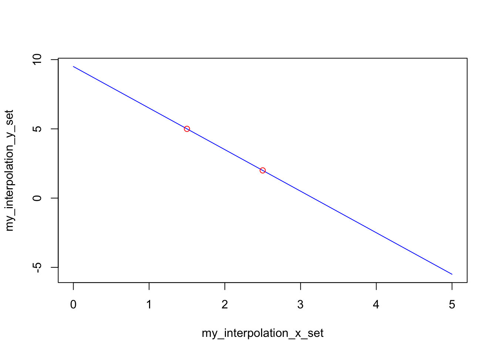
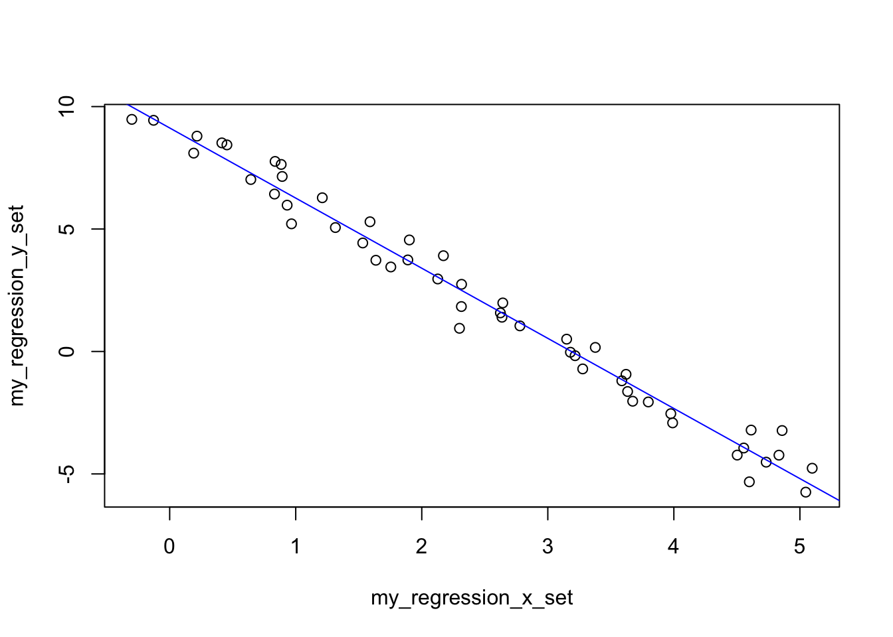

This is probably one of the last entries from my preparation to introduce “Background of ML for Cybersecurity”. This time, it’s really about what should probably have been the first entry of the series. Also, it’s not really put in context of Cybersecurity: I’m just trying to show one needs not be afraid about the math.
I’m having lots of doubts about this one, too: Can I even use the “Machine Learning” tag? After all, this predates ML by quite a bit. It’s really of the realm of statistics. Then again, the limit of what qualifies as ML and what doesn’t is somewhat blurry (at least to me).
And some of it is very very simple, and maybe shouldn’t warrant writing about it. But I like to write things down, it helps organize my thoughts sometimes, and I believe in the idea that really understanding the basics is helpful to grasp concepts when things get more complicated.
Why linear regression in the first place?
IF (and that’s a reasonably big if) you can find a linear relationship between two numerical vectors, then using a linear regression can help “encode” the whole pair of vectors through “just” two numbers: A slope, and an intercept.
In effect, you’re “modelling” a relationship - and in doing so, you’re actually compressing information.
More to the point, if you have an intuition that such relationship holds true for other points you were not given, then you can interpolate (if the new points are in the range of original vectors - otherwise it’s called “extrapolation”) an expected output from a given input.
In other words: If you know (or expect) there is a linear (straight line) relationship between a webserver load and number of concurrently opened sessions, you could estimate a load (say % CPU) from knowing only the number of users currently connected (or the other way around, obviously). You’d expect the load to grow with the number of users.
The concept of regression (linear or otherwise) are important in ML. It’s a core part of most models. You doubt? Let me put it this way: Regression is a core part of how training a neural network works. There. Believe me now? (I guess I just justified myself in tagging this entry as Machine Learning, after all.)
Two points inter/extrapolation
We’ll start off very easy today. Imagine to begin with you only have two points. So two pairs\((x_1, y_1), (x_2, y_2)\) of coordinates then. IF (again, big IF) you somehow expects a straight line could be used to estimate a third \(y_3\) from a third \(x_3\) coordinate in the range of the two original points… How can you estimate said value of \(y_3\).
Well, it’s basic (elementary? high school? Idk) math, you want to find \(a, b\) in the following:
\[
y = ax + b
\]
There are two numbers to find (a slope, and an intercept), and we have two points. That’s a system of two equations. But instead of just doing the math, let’s think about this from a conceptual perspective.
You can probably skip this, as it’s really very basic, but I like to make sure I understand things, not just use the math I can find out there, and so I’m going to explain it nevertheless.
What is a “slope”?
Think of a bicycle ride, and you’re faced with a 8% upwards (so “positive”) slope; what does that mean? That for every 100 meters you advance horizontally, you should expect to gain 8 meters in elevation. So if you gain 8 units in the y direction, you have moved 100 units in the x direction.
With two points: \(y_2 - y_1 = 8, x_2 - x_1 = 100\). And you get to the slope by dividing both numbers (which is why we expressed the slope in percentage). So you need then:
\[
a = slope = {(y_2 - y_1) \over (x_2 - x_1)}
\]
Not soooo misterious now, is it? If the slope is downwards, \(y_2 < y_1\) and \(a < 0\), that’s all.
And what is the “intercept”?
If you show lines on a two dimensional graph, you often will see the \(y\) and \(x\) axis. The “intercept” is simply the point at which our line crosses (“intercepts”) the \(y\) axis. Which happens when \(x = 0\).
And by now, if we take any of our points, we have the following bits \(y_1, a, x_1\) for our equation \(y = ax + b\). Can we get to \(b\)?
\[
b = y_1 - a x_1
\]So that for \(x = 0\), we have \(b\) as the value of \(y\). Which is what we were looking for.
This was very very very basic stuff. But hopefully for those that don’t do math in their day-to-day life, or those that use formulas without thinking (or use Excel to estimate these things, if at all), or simply as a refresher… I don’t know. Sorry if that was boring.
## Suppose you have any two points:my_x <-c(1.5, 2.5)my_y <-c(5, 2)# Line goes through two points## By definition of "slope":my_line_slope <- (my_y[2] - my_y[1]) / (my_x[2]- my_x[1])## Then just replace with one point to get intercept:my_intercept <- my_y[1] - (my_line_slope * my_x[1])calculate_resulting_y <-function(x) { my_line_slope * x + my_intercept}## Say then we have any value of x ("independent variable"):my_interpolation_x_set <-seq(0, 5, 0.1)## In a perfect World, we could then get any dependent value:my_interpolation_y_set <-sapply(my_interpolation_x_set, calculate_resulting_y)plot(my_interpolation_y_set ~ my_interpolation_x_set, col ="blue", type="l")points(my_y ~ my_x, col ="red")

Multiple points with a linear relationship
In the above, we took a pretty big leap of faith: We just somehow knew/assumed that two points would represent a linear relationship.
But we’d probably feel more confident if we had more points to confirm our expectations first.
Today we’ll stay with the “Simple Linear Regression”, which is nicely explained in the Wikipedia.
We want to find \(\alpha, \beta\) that best describe not two points but instead estimate a line for several of them, so that we solve \(y = \alpha + \beta x\) that best estimate all \(x_i, y_i\) pairs we’re given (provided they look like a straight line).
And I’ve said “estimate” twice above, as there will be some error, and that’s key here: We essentially try to minimize the error that our estimated \(\alpha, \beta\) introduce, for each point. Written “fancily”:
\[
\widehat{\epsilon}_i = y_i - (\alpha + \beta x_i), \forall i \in [1..n], n \in \mathbb{N}
\]
Where n is the number of your available points…
Minimizing the error is an important concept in supervised machine learning.
Then using the “Sum of Square” of the residuals, we’re going to try to minimize that.
Sum of Square minimization
I will take the time to dive into this a bit, as it is relevant to understand for other cases. Although the math is better explained here, that approach of minimizing sum of squares is useful in other contexts and so here goes.
So today we are trying to “fit” a line to a set of points that are not necessarily exactly on said line (see “the result” below). But where do we start? How do we go about finding one line out of an infinite set of possible lines?
More or less, we find the parameters for our line equation that minimizes overall distance from all the points. So we try to minimize the sum of the error of our line from each point. It is a minimization exercise, but sometimes the points will be under the line, and others they’ll be above. To correct for that, we actually minimize the sum of distances, each one squared! That way, all values are positive, and we really try to minimize something.
There is another important point hidden right here: The key to understand “Gradient Descent”!
As we will see with the “results” below, the errors, when squared, are shaped in a sort of U. But what’s important is that the function behind that (parabolic) shape is that it’s differentiable.
Differentiating (that’s calculus) here will mean that we know in which direction (up, down, horizontal) said curve goes for a given point on the x axis. If we know that, we know that if the curve goes upwards, to minimize the thing, we want to go in the opposite direction.
And that’s exactly what “descending the gradient” is all about (although in multivariate settings: A gradient in vector calculus is “the direction and the rate of fastest increase”, so to “descend a gradient”, you want to move in the opposite direction).
For linear regression, it’s cool because we can do partial derivatives (as shown on the referenced Wiki page above) to find our \(\alpha\) and \(\beta\) parameters that describe the line that “best fit the data”.
It’s quite clever, mind you: You minimize the error of your predicted value compared to the actual value. That’s how your machine can learn! But it’s also what people have been using to train Neural Networks!
For today, let’s just store the following information: The “Least Square Minimization” can help find a minimum error through differentiation.
And for a future conversation: Gradient Descent (hidden in today’s Sum of Square Minimization) is one of the two mathematical keys for back-propagation. (And back-propagation was the before and after of connectionism in Machine Learning theory).
Alright, let’s move on and return to our very simple example.
The result
Remember how we said at some point that in ML, more data points is often better?
We’re going to find the line that best fits a set of points (I know a simple straight line will work here, because I’m the one generating said line… :D)
We’re also going to show the square of errors, how it looks like a U shape, and how it’s clear there is a minimum to it…
## Some points that can be used:my_regression_x_set <-seq(0, 5, 0.1) +rnorm(51,mean =0, sd =0.2)my_regression_y_set <- my_interpolation_y_set +rnorm(51, mean =0, sd =0.2)## SIMPLE linear regression. Using Least Squares distance.## Key idea: Minimize differences.## Find minimum for error function using differentiation.## Final equations here instead of step by step explaining how to get there.## Just follow the math:mean_reg_x <-mean(my_regression_x_set)mean_reg_y <-mean(my_regression_y_set)dev_x <- (my_regression_x_set - mean_reg_x)dev_y <- (my_regression_y_set - mean_reg_y)beta_est <-sum(dev_x * dev_y) /sum(dev_x^2)alpha_est <- mean_reg_y - (beta_est * mean_reg_x)plot(my_regression_y_set ~ my_regression_x_set)## alpha & beta can be confusing, I usually use Beta as multipliers of X...abline(a = alpha_est, b = beta_est, col="blue")

## Importantly, squared error is differentiable and has a global minimum## "easily". Related to "Gradient Descent"err_x <- my_regression_y_set - (alpha_est + my_regression_x_set * beta_est)err_y <-sapply(err_x, \(x) x^2)plot(err_y ~ err_x)
And that’s it! We’ve used the math (skipping some steps), to show one can use it to do a linear regression (although nowadays all that stuff is available with one command, if not directly, then through packages).
So here we’ve shown a downward slope: Let’s put it in context of a potential real-world application: Maybe our x axis represented the number of users connected to our system, and the y axis some number to represent the available resources (spare CPU or something) on a given server. If you know a linear relationship applies, you can estimate at which point you will reach 100% CPU… (I could have started with that, sorry.)
So in the future, if you see a clear straight line between two things, well, you could use the above not-scary-at-all math approach to “predict” what would happen if you move along the x axis.
Last note about the math: in this simple case, if you look at the code, we’ve in fact used two statistics concepts to do the calculations: the means of the x and y axis, and the “deviations” of each point to said means.
Does it not make some intuitive sense that the line that best fits the points is related to the means and deviations of the points to said means? :)
Look at the data
In the above, we’ve used deviations and means. These are basic concepts from statistics. And in the introduction, we have mentioned something about “models” and “compression”. Which is what it is: Statistics are NOT the real world. And they can be misused. Here the 2 most common examples to illustrate how you can go astray with using statistics without looking at the data.
Let’s illustrate just that, with a couple of typical (like, VERY typical) examples:
And if it’s not clear enough, all these here below have the same mean and standard deviation:
[1] "Mean x Dino: 47.8322528169014"
[1] "Mean x Bullseye: 47.8308231552178"
[1] "SD x Dino: 16.7651420391168"
[1] "SD x Bullseye: 16.7692394934267"
See how they are basically the same numbers?
Statistics are great, useful and very important today (and have been for quite a while, I’d argue). They’re just not always the right solution (neither is ML in a larger sense, mind you).
Always look at the data!
Conclusions
We’ve gone from really REALLY simple stuff all the way to mentioning differentiation, gradient descent, statistics…
And we’ve skipped steps! (i.e. solving systems of equations, which can be represented as matrices, which is relevant for completely different reasons :D)
Not too shabby, after all…
I’d like to go into Logistic Regression and Neural Networks a bit in a future entries. Even discuss a bit the history of ML, maybe. And that would conclude my preparation for my sessions about “ML Background for Cybersecurity”. Surely there is more to it all, but if I manage to convey a few key concepts to my colleagues, I’ll be very very happy. And this here is me trying.
But after that, I’ll shift gears and focus on a personal project I have had in mind for some time and that is taking shape: It involves writing an R package, for a set of ML algorithms that for reasons I don’t quite understand have not received as much attention as I personally think they should. To be continued!